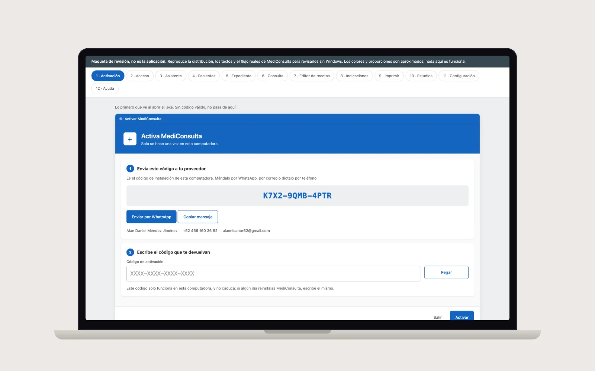

Caso de estudio · Salud
MediConsulta
Consultorio médico privado · Jul – Ago 2026
Entregado · en uso
Alan Daniel Méndez JiménezSoftware a medida · Celaya, Gto.
+52 466 160 3682
alannicanor62@gmail.com
+52 466 160 3682
alannicanor62@gmail.com
Programa de escritorio para Windows: pacientes, consultas, recetas con membrete, agenda y respaldos automáticos. Sin internet, sin mensualidades.

El problema
- Más de 1,500 expedientes en un sistema anterior que ya no se podía mantener, con pacientes duplicados y recetas hechas a mano.
- El consultorio necesitaba algo que funcionara sin internet, sin depender de un proveedor y sin cuotas mensuales.
- Cambiar de computadora o respaldar la información era un riesgo.
La solución
- Aplicación de escritorio (C# .NET 8, WPF) en un solo archivo .exe: pacientes, consultas, 10 diseños de receta con membrete y firma, agenda y catálogo de medicamentos.
- Toda la información vive en un archivo: cambiar de equipo es copiar y pegar. Respaldos automáticos (últimos 30) sin cerrar el programa.
- Migración del sistema anterior con deduplicación de expedientes y numeración consecutiva conservada.
- Licencia por computadora activable por WhatsApp (código de instalación → código de activación) y portal del proveedor para administrar clientes.
El resultado
- Entregado y en uso diario en el consultorio con su impresora de recetas.
- 1,041 pruebas automáticas que codifican fallos reales encontrados en operación (expediente repetido, media hoja desperdiciada, etc.).
- Sincronización entre dos computadoras (v1.1) y versión Java en curso para macOS/Linux.
C# 12.NET 8WPFSQLiteQuestPDFMaterial DesignJava 21 (port)